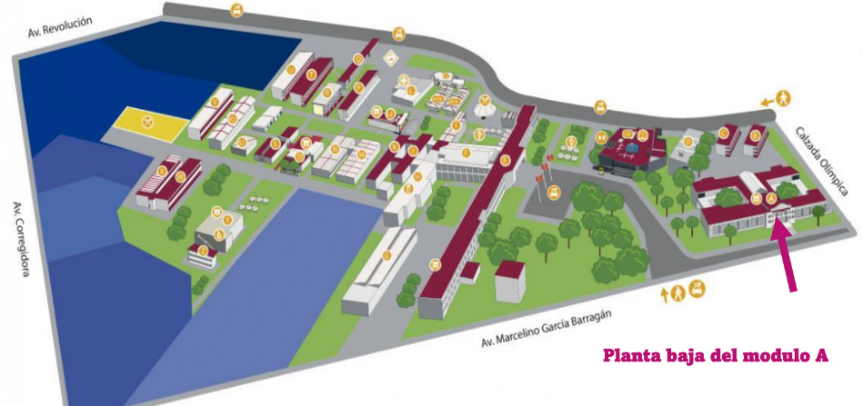

La unidad de vinculación es aquella que permite y logra que los alumnos tengan contacto con cosas de interés.
Bolsa de trabajo (Licenciaturas, ingenierías y ciencias)
La unidad de Vinculación es la responsable del programa de practicantes. Dentro de sus funciones se encuentra:
1. Realizar el vínculo entre el CUCEI y entidades receptoras mediante la realización de un convenio, a este convenio se le denomina convenio específico de prácticas profesionales.2. Gestionar vacantes con empresas o dependencias vinculadas.
3. Llevar el proceso de asignación de los estudiantes del programa de prácticas profesionales.
División de Electrónica y Computación - Prácticas Voluntarias
Porcentaje de créditos para realizarlas: se recomienda a partir del 50% o si la empresa considera al alumno apto para las actividades cuando tenga menor cantidad de créditos.
Horas mínimo: 300 horas
Valor de créditos: no genera créditos
La unidad de vinculación facilita la bolsa de trabajo para los estudiantes que conforman el centro universitario, brindando informes, opciones e incluso ayudando con el curriculum.
Becas universitarias
Esta unidad también facilita la solicitud de becas, desde información, papeleo, formatos y demás.
Intercambios
También puede ayudarte con la información, papeleo y conocimiento acerca de las convocatorias de intercambios estudiantiles, proceso mediante el cual se pueden obtener estancias por movilidad durante uno o dos calendarios.
Ubicación
